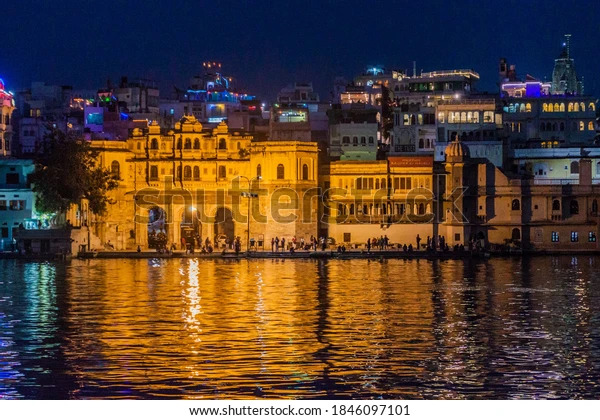
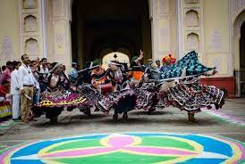
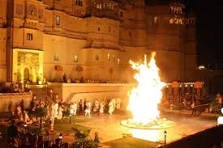
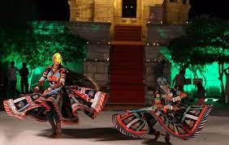
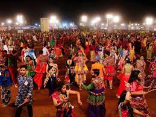
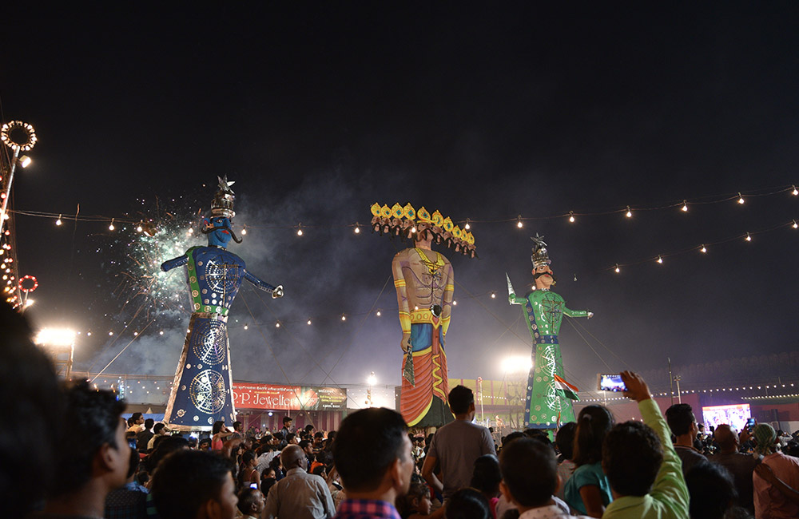
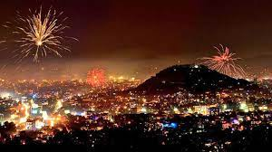

FESTIVALS IN RAJASTHAN
Gangaur Festival :-
Where:All over Rajasthan
Duration of Festival: 1 days
Special attractions: Uplifting occasion filled with singing, swinging, and dancing
Soon after Holi, the people of Rajasthan celebrate the festival of Gangaur. It commences on the day right after Holi and lasts for 18 days. The festival is celebrated by the womenfolk with great enthusiasm and devotion for Gauri, the consort of Lord Shiva. While married women worship Gauri, unmarried women worship the Goddess to get blessed with good husbands. All the female members gather to dress the image of Isar and Gangaur and then carry them in a ceremonial procession through different parts of the city. This is the time of year when all the women put their best foot forward and look like a diva.
Teej :-
Where: All over Rajasthan
Duration of Festival: 18 days
Special attractions: Reverence of Lord Shiv and Goddess Parvati
To improve the marital status of their lives, women in Rajasthan fast on the day of Teej for marital bliss. Teej plays a very significant role in the life of women as they celebrate this festival in the honour of Parvati, who is also known as 'Teej Mata’. Other than this, it is a very colourful festival where all the ladies enjoy swing, sing, apply heena and adorn themselves with all the jewellery. A special sweet called “ghewar” is prepared specially for this day and also served as Prasad. Teej provides an opportunity to renew family bonds.
Holi :-
Where: All over Rajasthan
Duration of Festival: 2 days
Special attractions: festival of colours
The colourful state of Rajasthan celebrates Holi much the same way as Mathura. Crowds of people come together before the full moon night and light huge bonfires to burn the residual dried leaves of the winter. On the second day, people throw coloured water and powders (gulal and kumkum) at each other and make merry. Singing, dancing and the traditional beats of dhol add to the gaiety of the occasion.
Marwar Festival :-
Where: All over Rajasthan
Duration of Festival: 2 days
Special attractions: folk music, live dancing
This lively festival is celebrated for two days during the full moon of Sharad Purnima. The carnival displays the traditional dance and music of Marwar region bringing to life the heroes of Rajasthan. Various other competitions are organized on this day including the regal games of horse and polo.
Navratri :-
Where: All over Rajasthan
Duration of Festival: 9 days
Considered as the most auspicious 9 days of the Hindu calendar, Navratri is celebrate with great fervour and verve all across Rajasthan. Worship and fasting takes place during the day time while the nights are reserved for feasting and dancing.
Dussehra :-
Where: All over Rajasthan
Duration of Festival: 1 days
Special attractions: Carnival, rides
To celebrate the victory of good over evil, Dusshera is celebrated all over Rajasthan. This day also symbolizes triumph of Goddess Durga over the buffalo demon, Mahishasura. Huge and colourful processions of Lord Rama is organized everywhere. To celebrate the victory of Lord Rama, paper statues of Ravana along with Meghnath and Kumbhkaran are set on fire; this is followed by a huge carnival where people can enjoy sweets, food, rides, dance and musical performances.
Diwali :-
Where: All over Rajasthan
Duration of Festival: 5 days
Special attractions: of lights, firework
Considered as the festival of lights, Diwali is celebrated as the homecoming of Lord Rama. This 5 day long carnival is celebrated with great enthusiasm. Houses and shops are given a rigorous spring clean before being lovingly decorated with fairy lights, patterned lanterns and colourful rangolis/kolams. Puja is organized in the evening to seek the blessings of Devi Lakshmi. After the religious ceremony, people share sweets with family and neighbours, followed by splendid fireworks. People exchange gifts and enjoy them as much possible. These 5 days are considered very auspicious as people purchase utensils and cloths, some even start new business during this time.